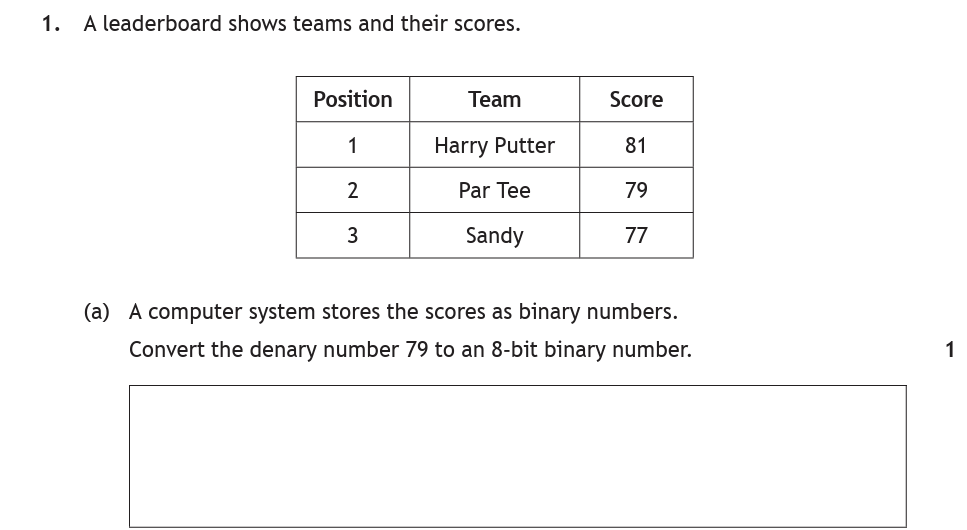
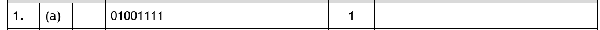
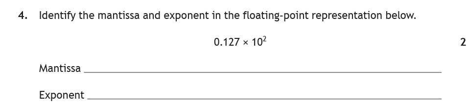
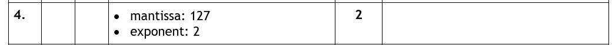

Introduction
Deep down, a computer only understands two things: on and off, 1 and 0. Every score, price and age your programs have ever stored ends up as a pattern of 1s and 0s — binary. This page covers how whole numbers are stored in binary (and how to convert them in both directions), and how numbers with a decimal point are stored using floating-point representation.
Key Terms
Binary Numbers
Computers store whole numbers using binary — a number system with only two digits, 1 and 0. To work with 8-bit binary, draw eight place-value columns, starting at 1 on the right and doubling each time:
| 128 | 64 | 32 | 16 | 8 | 4 | 2 | 1 |
|---|---|---|---|---|---|---|---|
| 1 | 0 | 0 | 1 | 1 | 1 | 0 | 1 |
Every binary number is just a row of 1s and 0s sitting under those columns. A 1 means "this column is switched on"; a 0 means it isn't. That one idea powers both conversions below.
You never have to remember the columns
You don't need to memorise 128, 64, 32, 16, 8, 4, 2, 1. Write a 1 at the right-hand end and double your way left — the whole row rebuilds itself in about five seconds. Do this on your paper before you start any conversion question:
How far eight bits can go
Eight bits can be arranged in 256 different patterns. That does not mean the largest number is 256 — because the counting starts at 0, not 1:
Converting Binary → Denary
To turn a binary number into an ordinary (denary) number: write it under the place-value columns, then add up every column with a 1 in it. Done.
| 128 | 64 | 32 | 16 | 8 | 4 | 2 | 1 |
|---|---|---|---|---|---|---|---|
| 0 | 1 | 0 | 1 | 1 | 1 | 0 | 0 |
Columns with a 1: 64 + 16 + 8 + 4 = 92.
Converting Denary → Binary
Going the other way takes slightly more thought. There are a few methods — this one is the simplest. Draw the columns, then work left to right, asking of each column: does this fit into what I have left?
- Does 128 fit into 87? No — write a 0.
- Does 64 fit into 87? Yes — write a 1. That leaves 87 − 64 = 23.
- Which remaining columns make 23? 16 + 4 + 2 + 1 — write a 1 in each.
- Fill every other column with 0.
| 128 | 64 | 32 | 16 | 8 | 4 | 2 | 1 |
|---|---|---|---|---|---|---|---|
| 0 | 1 | 0 | 1 | 0 | 1 | 1 | 1 |
So 87 is 0101 0111. Always check your working by adding the 1-columns back up: 64 + 16 + 4 + 2 + 1 = 87 ✓
1010111 is only seven — cheap marks have been lost this way.8-bit Binary Converter
Click any bit to flip it, or type a denary number and convert. The place values stay on show and the working is written out beside them, so you can check your own answer column by column. Try 255 to see every column switched on, and 128 to see the opposite — one bit doing all the work.
Floating Point — Mantissa & Exponent
Binary place values handle whole numbers — but what about real numbers like 0.5571257? These are stored using floating-point representation. If you're asked how floating-point numbers are stored, the answer is: with a mantissa and an exponent.
The idea comes from scientific notation, which you may know from maths or physics:
5.8125 = 0.58125 × 10⁴ mantissa = 58125 (the digits — remove the decimal point) exponent = 4 (the power — remove the ×10)
Each part has its own job:
- The mantissa governs the precision of the number. Pi can be shortened to 3.14, but 3.14159265359 is more precise — the longer the mantissa, the more precise the number.
- The exponent governs the range — the higher the exponent, the larger the number can be.
Anatomy of a floating-point number
Here is exactly how the question appears on the paper. Two parts of what's printed are not part of either answer — cross them out and what's left is the two marks:
Worked Examples

How to tackle it: the leaderboard is set dressing — all that matters is the number 79 and the words "8-bit binary". Draw the columns and work left to right:
- 128 into 79? No — 0.
- 64 into 79? Yes — 1, leaving 79 − 64 = 15.
- Which columns make 15? 8 + 4 + 2 + 1 — a 1 in each.
- Zeros everywhere else.
| 128 | 64 | 32 | 16 | 8 | 4 | 2 | 1 |
|---|---|---|---|---|---|---|---|
| 0 | 1 | 0 | 0 | 1 | 1 | 1 | 1 |
Check: 64 + 8 + 4 + 2 + 1 = 79 ✓ — and count the bits: all eight present.


How to tackle it: the number is 0.127 × 10². Apply the two rules:
- Mantissa = the digits, with the decimal point removed → 127
- Exponent = the power, with the ×10 removed → 2
That's the whole question — two marks for knowing which part is which.

Watch you don't swap them! Writing "mantissa: 2, exponent: 127" scores zero, which would be a sore one.
Practice Questions
A quiz program stores each player's score. Convert the denary number 106 to an 8-bit binary number.
Marking Instructions
0110 1010
Working: 106 = 64 + 32 + 8 + 2. One mark for the correct 8-bit answer — remember the leading zero.
Convert the binary number 1011 0010 to denary.
Marking Instructions
178
Working: 128 + 32 + 16 + 2 = 178. One mark for the correct answer.
Identify the mantissa and exponent in the floating-point representation below.
0.3945 × 10⁶
Marking Instructions
Mantissa: 3945 (1 mark)
Exponent: 6 (1 mark)
A weather app stores temperatures such as 18.375. Describe how real numbers like this are stored in a computer system.
Marking Instructions
Real numbers are stored using floating-point representation, with a mantissa (1 mark) and an exponent (1 mark).
Naming the two parts is what earns the marks — a stronger answer can add that the mantissa holds the number's digits/precision and the exponent holds the power/range.